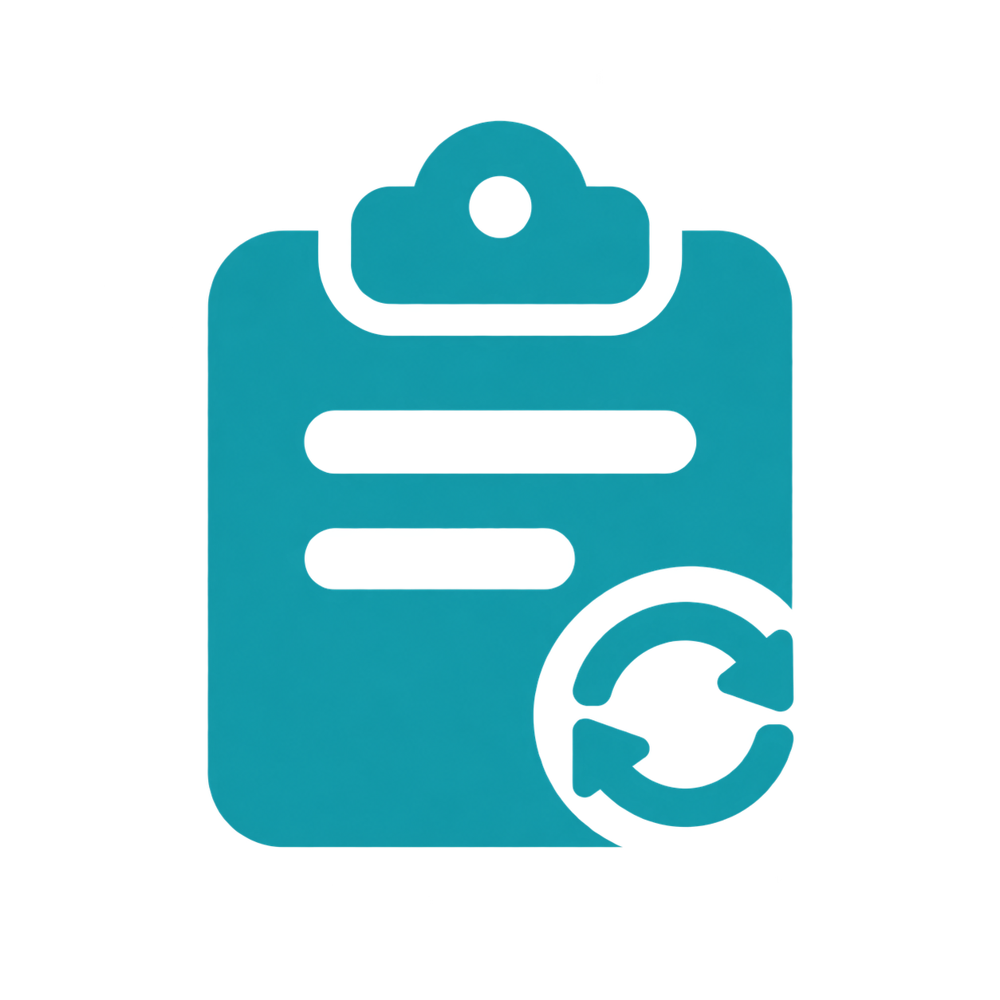

연결된 기기와 새로 복사한 텍스트·이미지·파일을 자동으로 동기화합니다. 신뢰하는 기기만 연결하세요.
처음 한 번만 입력하세요. 저장한 연결은 앱을 다시 켜도 자동으로 복원됩니다. 키와 비밀번호는 신뢰하는 기기에만 공유하세요.
전용 서버 없이 PC끼리 직접 연결합니다. 같은 네트워크에서는 바로 찾고, 외부망에서는 공개 분산 탐색망을 함께 사용합니다. UDP 차단·일부 NAT 환경에서는 연결되지 않을 수 있습니다. 유료 중계는 사용하지 않습니다.
이미지·프로그램·파일당 최대 500MB · 한글 파일명 보존
Ctrl/Command, Alt, Shift와 영문자·숫자를 조합하세요.
컴퓨터에 로그인하면 트레이·메뉴바에서 자동으로 시작합니다.
최대 100개의 기록을 이 PC에 보관합니다. 텍스트·파일 경로는 OS 보안 저장소로 암호화하며, 이미지는 앱 전용 폴더에 저장합니다. 파일은 원본이 있어야 다시 복사할 수 있습니다. 해제하면 저장된 기록을 지우고, 현재 기록은 앱 종료 시 사라집니다.
실행 후와 6시간마다 GitHub에 접속해 새 버전을 확인하고 알려드립니다. 클립보드 내용과 연결 정보는 전송하지 않습니다.
창 가장자리와 모서리를 드래그해 크기를 조절하세요. 크기와 위치는 다음 실행에도 유지됩니다. ×·Esc는 창을 숨기고 동기화를 계속합니다. 종료 버튼은 앱을 완전히 닫습니다.
새 버전을 확인할 수 있습니다.
다운로드는 브라우저에서 진행됩니다. 완료 후 ClipSync를 종료하고 설치 파일을 실행하세요. 연결 정보와 설정은 유지됩니다.
Horizon Entertainment
누르면 메일 프로그램이 열립니다. 문의 내용은 자동으로 전송되지 않습니다.